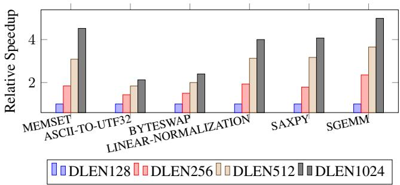

Titan-l: An Open-Source, High Performance RISC-V Vector Core 图表详解¶
Figure 1: Execution Cycles for Different Standalone Workloads on Datapath Size of T1 from 128 to 1024.¶

- 图片展示了 Titan-I (T1) 处理器在不同数据通路宽度（DLEN）下，执行多种独立工作负载时的相对加速比。横轴为工作负载类型，纵轴为相对于基准配置的性能提升倍数。
- DLEN 配置分为四档：DLEN128、DLEN256、DLEN512 和 DLEN1024，分别用蓝色、红色、米色和深灰色柱状图表示。
- 工作负载包括：MEMSET、ASCII-TO-UTF32、BYTESWAP、LINEAR-NORMALIZATION、SAXPY 和 SGEMM。
- 从图表可见，随着 DLEN 增大，所有工作负载的性能均显著提升，体现了 T1 架构对数据级并行（DLP）的良好扩展性。
- 在 DLEN1024 配置下，SGEMM 和 MEMSET 的加速比最高，均超过 4 倍；而 BYTESWAP 和 LINEAR-NORMALIZATION 的加速比相对较低，但仍达到约 2.5 倍。
- 数据表明，T1 的性能增益与 DLEN 呈正相关，尤其在计算密集型任务如 SGEMM 中表现最为突出。
| 工作负载 | DLEN128 | DLEN256 | DLEN512 | DLEN1024 |
|---|---|---|---|---|
| MEMSET | ~0.8 | ~1.8 | ~3.0 | >4.0 |
| ASCII-TO-UTF32 | ~0.7 | ~1.5 | ~2.0 | ~2.5 |
| BYTESWAP | ~0.6 | ~1.2 | ~1.8 | ~2.5 |
| LINEAR-NORMALIZATION | ~0.7 | ~1.4 | ~2.0 | ~2.5 |
| SAXPY | ~0.7 | ~1.6 | ~3.0 | >4.0 |
| SGEMM | ~0.6 | ~1.8 | ~3.5 | >4.5 |
- 图表直观验证了论文第 3.1 节所述：扩大 DLEN 可有效提升向量处理器吞吐量，尤其适用于矩阵运算等高并行度场景。
- 同时也印证了第 4.1 节中提出的粗粒度布线求解器和跨通道置换单元设计的有效性，使得超宽数据通路下的性能提升得以实现而无严重路由瓶颈。
Figure 2: Static Cross Lane Access For widen and narrow; In this access pattern, the i-th lane accessing the (2i mod n)-th and (2i + 1 mod n)-th lane.¶

- 图片展示了 T1 架构中用于 widen 和 narrow 指令的静态跨lane访问模式，该模式在机器学习等混合精度运算中至关重要。
- 该图描绘了8个逻辑lane（Lane 0 至 Lane 7），每个lane包含一个 src（源）和一个 sink（目的）端口，代表数据流动的方向。
- 根据图注说明，第
i个lane需要访问(2i mod n)和(2i + 1 mod n)号lane。以n=8为例，其访问关系如下表所示：
| i (源lane) | 访问目标lane 1 (2i mod 8) | 访问目标lane 2 (2i+1 mod 8) |
|---|---|---|
| 0 | 0 | 1 |
| 1 | 2 | 3 |
| 2 | 4 | 5 |
| 3 | 6 | 7 |
| 4 | 0 | 1 |
| 5 | 2 | 3 |
| 6 | 4 | 5 |
| 7 | 6 | 7 |
- 从图中可见，数据流呈现出高度交错的网状结构，例如Lane 0的数据流向Lane 0和Lane 1；Lane 1的数据流向Lane 2和Lane 3，以此类推。
- 这种访问模式对芯片物理设计构成严峻挑战：它要求不同lane之间必须存在大量、复杂的互连布线，极易导致路由拥塞和时序违例。
- 正是由于这种固有的复杂性，论文在4.1.1节提出了一种粗粒度布局求解器，旨在通过智能放置lane来最小化此类跨lane访问的最大布线距离，从而降低延迟并提升性能。
Figure 3: Architecture of T1¶

- 图片展示了 Titan-I (T1) 的完整微架构设计，其核心目标是同时扩展 Instruction-Level Parallelism (ILP) 和 Data-Level Parallelism (DLP)。
- 架构以 Scalar Core 为顶层控制单元，负责指令获取（Fetch）、预解码（ID）、执行（EXEC）、内存操作（MEM）和提交（COMMIT），并集成 Vector Scoreboards 以协调标量与向量流水线的并发。
- Sequencer 作为向量指令的控制中心，位于标量核心下方，负责解码向量指令、生成控制信号，并通过 VType Cache 实现配置指令融合，减少带宽损耗。
- 向量运算由环绕布局的多个 Lane 单元完成，每个 Lane 独立处理指令，包含前端（FE）、寄存器文件（RF）、执行单元（EX）和提交单元（CM），并通过 Linked List Scoreboards (SB) 管理指令状态与依赖。
- Permutation Unit 位于架构中央，提供 DLEN 宽度的数据重排能力，支持静态与动态跨 Lane 操作，并配备 Shadow Mask (v0) Flip-Flops 缓存掩码寄存器，避免跨 Lane 广播瓶颈。
- 内存子系统分为两个专用单元：HBLSU（高带宽 LSU）用于单位步长访问，支持 Memory Interleaving；HOLSU（高未决 LSU）处理常数步长与索引访问，利用 Inflight Trackers 支持延迟槽优化。
- 关键创新点包括：
- Issue-as-Commit 机制：允许标量指令在向量指令进入队列后立即提交，仅在真实依赖时才阻塞。
- Fine-Grained Chaining：在 ELEN × LaneScale 粒度上管理数据依赖，允许乱序写回 VRF，提升流水线利用率。
- Memory Delay Slot：允许独立指令在索引加载/存储完成前继续执行，隐藏长延迟。
- 数据路径细节：
- VRF Banks SRAM 采用分块结构，每条流水线配三个读队列和一个写队列，支持 ECC 错误纠正。
- Chaining Record 用于验证 VRF 读写总线上的链式操作，确保数据一致性。
- Cross-Lane Read/Write IN/OUT 接口实现 Lane 间高效数据交换。
- 性能优化技术：
- Speculative Zero-Mask Elision：前端检测全零掩码组，跳过后续计算阶段，显著减少冗余操作。
- Banked VRF with Decoupled Domain：支持 DVFS 动态调频及深度睡眠模式，降低功耗。
- 下表总结了 T1 架构中关键模块的功能与创新：
| 模块名称 | 主要功能 | 核心创新 |
|---|---|---|
| Scalar Core | 控制流、标量运算、指令提交 | 集成 Vector Scoreboards，支持 Issue-as-Commit |
| Sequencer | 向量指令解码与调度 | VType Cache，配置指令融合 |
| Lane | 并行向量运算单元 | Linked List Scoreboards, Speculative Zero-Mask Elision |
| Permutation Unit | 跨 Lane 数据重排 | Shadow Mask v0, DLEN-width Crossbars |
| HBLSU | 高带宽内存访问 | Memory Interleaving, Conflict Region Table |
| HOLSU | 高未决内存访问 | Inflight Trackers, Memory Delay Slot |
| VRF Banks SRAM | 向量寄存器文件 | Fine-Grained Chaining Scoreboard, Transient ECC |
- 整体架构通过 粗粒度布图求解器 优化物理布局，最小化跨 Lane 路由延迟，确保在扩展 DLEN 时仍保持线性面积增长。
Figure 4: Linearly Area Scaling of T1 design parameters,evaluated at TSMC N28 SVT technology at 65% utilization.Four cases are examined:(1)when varying VLEN,DLEN is held at 128,y-asix on the left-hand represents the total area of T1,whereas the right-hand y-axis isolates the area of Lane and Permutation;(2)when varying DLEN,the ratio VLEN/DLEN remains 1; (3)when examining LaneScale,both VLEN and DLE are set to 1024,y-asix on the left-hand represents the total area of T1,whereas the right-hand y-axis isolates the area of Lane;and(4)when asesing ChainingSize,VLEN and DLEN are maintained at 1024.¶

- 图片展示了 T1 架构在 TSMC N28 SVT 工艺下，四个关键设计参数对芯片面积影响的线性扩展分析，所有测试均在 65% 利用率下进行。
- 图 (a) VLEN 变化：固定 DLEN=128，考察 VLEN 从 1,024 到 16,384 的变化。左侧 Y 轴为 T1 总面积（mm²），右侧 Y 轴为 Lane 和 Permutation 单元的独立面积。结果显示，随着 VLEN 增加，总面积呈近似线性增长，而 Lane 和 Permutation 单元面积增长缓慢，表明其设计具有良好的可扩展性。
- 图 (b) DLEN 变化：保持 VLEN/DLEN 比值为 1，考察 DLEN 从 128 到 1,024 的变化。左侧 Y 轴为 T1 总面积。数据显示，总面积随 DLEN 增加而线性增长，验证了架构在数据通路宽度扩展上的线性可扩展性。
- 图 (c) LaneScale 变化：固定 VLEN=1024, DLEN=1024，考察 LaneScale 从 1 到 4 的变化。左侧 Y 轴为 T1 总面积，右侧 Y 轴为 Lane 单元面积。结果表明，增加 LaneScale 会显著降低总面积，因为其通过聚合相邻 Lane 来节省面积，但 Lane 单元自身面积会随之增加。
- 图 (d) ChainingSize 变化：固定 VLEN=1024, DLEN=1024，考察 ChainingSize 从 2 到 8 的变化。Y 轴为 T1 总面积。数据显示，随着 ChainingSize 增大，总面积缓慢上升，说明细粒度链式执行虽带来控制逻辑开销，但整体面积增长可控。
| 参数 | 固定值 | 变化范围 | 面积趋势 | 关键观察点 |
|---|---|---|---|---|
| VLEN | DLEN=128 | 1,024 - 16,384 | 总面积线性增长 | Lane/Permutation 单元面积增长缓慢 |
| DLEN | VLEN/DLEN=1 | 128 - 1,024 | 总面积线性增长 | 验证了数据通路宽度扩展的线性可扩展性 |
| LaneScale | VLEN=1024, DLEN=1024 | 1 - 4 | 总面积下降，Lane 单元面积上升 | 通过聚合 Lane 节省总面积 |
| ChainingSize | VLEN=1024, DLEN=1024 | 2 - 8 | 总面积缓慢上升 | 细粒度链式执行带来可控的面积开销 |
- 所有图表共同证明了 T1 架构在多个维度上具备出色的线性面积扩展能力，这是其能够高效支持大规模向量处理的关键基础。
Titan-l:An Open-Source, High Performance RISC-V Vector Core¶

- 图片展示了一个 32-lane 的向量处理器物理布局示意图，用于说明 Titan-I (T1) 架构中 粗粒度布图规划器 (Coarse Floorplaner) 的优化效果。
- 布局以 8x4 网格 形式排列，每个单元格代表一个逻辑或物理的 lane，并标有从 0 到 31 的唯一编号。
- 图中用 红色高亮路径 标记了特定的跨lane数据访问模式，例如：
- 从 lane 3 到 lane 17
- 从 lane 14 到 lane 28
- 从 lane 1 到 lane 5、9、13、17 等（横向连续访问）
- 从 lane 2 到 lane 6、10、14、18、22、26、30 等（横向连续访问）
- 从 lane 3 到 lane 7、11、15、19、23、27、31 等（横向连续访问）
- 这些路径模拟了在执行 “widen” 和 “narrow” 等混合精度指令时，数据需要在不同lane之间移动的典型场景。
- 在一个 平凡布局 (trivial layout) 下，这些跨lane访问可能导致最大路由延迟高达 7个路由单元。
- T1 的 粗粒度布图规划器 通过智能重排lane位置，将最大路由距离优化至 4个路由单元，从而降低关键路径延迟约 12%。
- 此优化对于 大DLEN设计 尤为重要，可减少“widen”和“narrow”操作的周期数近 20%，而无需增加额外硬件成本。
- 该图直观地体现了 T1 如何通过 物理布局优化 来解决向量处理器扩展时面临的 路由拥塞 问题，是其高性能的关键微架构创新之一。
059cc18a0fd5fdea64b90f6c0ee6a78e62366895f9e4603e38815ac5dd4bb8b7.jpg¶

- 图片展示了一个 4x8 的网格布局，每个单元格内包含一个从 0 到 31 的唯一数字，代表 lane 的物理位置编号。
- 网格中用绿色高亮路径连接了部分 lane，具体路径为：0 → 3 → 24 → 31 → 15 → 6 → 27 → 30 → 13 → 29 → 11 → 22 → 12 → 28 → 21 → 19 → 0，形成一个闭合回路。
- 此布局用于说明 T1 架构中 coarse-grained floorplanning solver 的优化效果，旨在最小化跨 lane 数据传输的路由距离。
- 对比传统布局（如图中未高亮部分），该优化方案将最大跨 lane 延迟从 7 个路由单元降低至 4 个单元，提升“widen”和“narrow”指令性能约 12%。
- 该图是论文 Figure 5 的一部分，用于可视化 floorplan 优化对减少互连延迟的实际贡献。
Figure 6: Different ILP Technology in T1. Chaining interleaves Vo,V1,and V2.Memory Interleaving mitigates the VSW-VLD dependency. Vector-Scalar OoO interleaves the vector and scalar pipelines until a true dependency v16-s64- v15 occurs.Memory Delay Slot parallelizes vector index load/store (VIDxo) with independent vector executions (VEX0).¶

- 图片展示了 Titan-I (T1) 架构中四种关键的 ILP（Instruction-Level Parallelism） 优化技术，旨在提升向量指令的并发执行效率。
- 四个子图分别对应：Memory Interleaving、Vector-Scalar OoO、Chaining 和 Memory Delay Slot，每个子图通过流水线示意图和箭头标注说明其工作原理。
| 技术名称 | 核心机制 | 解决的问题 | 关键优势 |
|---|---|---|---|
| Memory Interleaving | 允许 VLD（Vector Load） 与 VSW（Vector Store） 在同一周期内并行执行。 | 单一内存通道交替导致的带宽浪费 | 提升单位时间内的内存吞吐量，减少等待延迟 |
| Vector-Scalar OoO | 向量指令与标量指令可独立乱序执行，仅在存在真实数据依赖时才同步（如 v16-s64-v15）。 | 标量核心因等待向量结果而停滞 | 最大化标量与向量单元利用率，避免空闲周期 |
| Chaining | 依赖指令（如 V0→V1→V2）可在元素粒度上重叠执行，前一条指令未完成即可启动下一条。 | 向量流水线长导致的串行化瓶颈 | 显著降低整体执行延迟，提升流水线填充率 |
| Memory Delay Slot | 在 VIDX（Indexed Load/Store） 执行期间，允许独立的 VEX（Vector Execute） 指令并行执行。 | 索引访问高延迟阻塞后续指令 | 隐藏内存访问延迟，提高计算资源利用率 |
- Memory Interleaving 子图中，VLD 与 VSW 的执行被交错安排，避免了传统设计中“先读后写”的强制顺序，从而实现负载与存储通道的同时激活。
- Vector-Scalar OoO 子图显示标量寄存器 s0~s64 与向量寄存器 v0~v16 可并行处理，仅当标量指令依赖向量结果（如 s64 ← v15）时才触发同步，其余情况保持独立调度。
- Chaining 子图强调指令间的数据依赖可通过细粒度转发解决，V0 的输出可立即作为 V1 的输入，无需等待整个向量操作完成，极大压缩了指令间间隔。
- Memory Delay Slot 子图揭示了索引加载（VIDX0）虽耗时较长，但不影响独立计算指令（VEX0）的执行，后者可提前进入流水线，有效掩盖长延迟操作的影响。
- 所有技术均围绕“减少停顿、增加重叠、提升并发”展开，是 T1 实现高性能向量处理的核心微架构创新。
Table 1: Cycle count of PACK tests at the T1 configuration DLEN= 256, VLEN= 4096,LaneScale = 1,ChainingSize = 4¶

- 该图片为论文中的 Table 1，标题明确指出其内容是针对 PACK 测试 在特定 T1 配置（DLEN=256, VLEN=4096, LaneScale=1, ChainingSize=4）下的 Cycle Count 数据。
- 表格包含三列：测试配置项、Cycles（执行周期数）、Slow Down（相对于标准 T1 的性能下降百分比）。
- 核心数据如下：
| 测试配置项 | Cycles | Slow Down |
|---|---|---|
| Standard T1 | 14817 | - |
| Disable Chaining | 23862 | 61% |
| Disable Memory Interleaving | 19514 | 32% |
- Disable Chaining 导致周期数从 14817 增加到 23862，性能下降 61%，表明 Chaining 技术对提升 T1 的 ILP 和整体性能至关重要。
- Disable Memory Interleaving 导致周期数增加到 19514，性能下降 32%，说明 Memory Interleaving 对于优化内存带宽利用率和隐藏内存延迟同样有效。
- 该表格直观地量化了 T1 架构中两项关键微架构技术（Chaining 和 Memory Interleaving）的性能贡献，验证了论文第 4.2 节所述设计的有效性。
Figure 7: GDS of two Chips, top left is the floorplan of the core,top right is the implementation of T1IP block.¶

- 图片展示了两个基于 Titan-I (T1) 架构的芯片的 GDS（Graphic Data System）版图，分别用于不同的应用场景。
- 左上角为 Edge AI Chip SoC Top GDS，显示了整个系统级芯片（SoC）的顶层布局。其中：
- Application Core 位于中央，作为主控单元。
- T1 核心位于上方，两侧环绕着 SRAM 缓存块。
- 下方是两块 SONOS Flash 存储器，用于存放模型权重等非易失性数据。
- 右上角为 T1 Top (Edge AI Chip)，聚焦于 T1 核心在边缘 AI 芯片中的具体实现。可见：
- Scalar 单元位于顶部，负责指令预取和标量运算。
- 中央为 Permutation Unit，承担跨lane数据重排功能。
- 周围分布着 Lane 0 至 Lane 7，构成并行处理单元。
- 底部为 LSU（Load/Store Unit），负责内存访问。
- 左下角为 T1 Lane (Edge AI Chip)，详细展示了一个 lane 的内部结构。包含：
- VRF（Vector Register File）作为核心存储单元。
- VFU XBar 为向量功能单元交叉开关。
- 多个 SB0-SB3（Scoreboard）用于跟踪指令状态。
- Mul, Float, ALU, Div 等功能单元，支持多种算术运算。
- 右下角为 T1 using in a ZKP Chip，展示了 T1 在零知识证明（ZKP）芯片中的应用。其布局与 Edge AI 版本相似，但强调了：
- Lane 0 至 Lane 3 的配置，表明该版本可能使用了更少的 lane 数量以适应特定工作负载。
- Permutation Unit 和 LSU 的位置保持不变，确保关键功能模块的高效互联。
| 区域 | 内容 | 功能说明 |
|---|---|---|
| Edge AI Chip SoC Top GDS | Application Core, T1, SRAM, SONOS Flash | 整体 SoC 布局，T1 作为协处理器加速 AI 推理 |
| T1 Top (Edge AI Chip) | Scalar, Permutation Unit, Lane 0-7, LSU | T1 核心内部结构，突出并行计算与数据重排能力 |
| T1 Lane (Edge AI Chip) | VRF, VFU XBar, SB0-SB3, Mul/Float/ALU/Div | 单个 lane 的详细组成，体现异构计算单元设计 |
| T1 using in a ZKP Chip | Scalar, Permutation Unit, Lane 0-3, LSU | 针对 ZKP 优化的 T1 实现，减少 lane 数量以节省面积 |
- 所有版图均体现了 T1 架构的核心设计理念：通过 lane-based 设计实现可扩展的 DLP，并结合 Permutation Unit 和 LSU 优化数据流和内存访问效率。
- Permutation Unit 在所有视图中均处于中心位置，凸显其在跨lane数据交换中的关键作用。
- Lane 的数量和布局可根据具体应用场景进行调整，如 Edge AI 使用 8 个 lane，而 ZKP 芯片则使用 4 个 lane，体现了架构的灵活性。
Table 2: Power, Frequency and Area of Testchips.Results are reported by synthsis tools after final DRC, LVS clean up, power is estimated under SAXPY workload.¶

- 图片 a9e00a809f58492f25f59e678799c6dc4a6d5dbd63e49c118fc68ed408b372aa.jpg 展示的是 Table 2，标题为“Power, Frequency and Area of Testchips”，数据来源于综合工具在最终 DRC/LVS 清理后的报告，功耗估算基于 SAXPY 工作负载。
- 表格分为三个子部分 (a), (b), (c)，分别从不同维度对比了两个测试芯片：EdgeAI MCU 和 ZKP Chip。
- 子表 (a) 提供了芯片的宏观物理和性能参数：
- EdgeAI MCU 的 Tile 面积为 2.450 mm²，Lane 面积为 0.220 mm²；总功耗 212 mW（Tile）+ 40.3 mW（Lane），工作频率 0.834 GHz。
- ZKP Chip 的 Tile 面积为 1.060 mm²，Lane 面积为 0.167 mm²；总功耗 569 mW（Tile）+ 57.5 mW（Lane），工作频率 1.14 GHz。
- 数据表明 ZKP Chip 在更小的面积下实现了更高的频率和功耗，符合其作为高性能密码学加速器的设计目标。
| 参数 | EdgeAI MCU (Tile) | EdgeAI MCU (Lane) | ZKP Chip (Tile) | ZKP Chip (Lane) |
|---|---|---|---|---|
| Area (mm²) | 2.450 | 0.220 | 1.060 | 0.167 |
| Power (mW) | 212 | 40.3 | 569 | 57.5 |
| Freq (GHz) | 0.834 | - | 1.14 | - |
-
子表 (b) 展示了芯片内部主要模块的功耗占比：
- 在 EdgeAI MCU 中，Lanes 占比最高，达 70.28%，其次是 Pipeline (43.47%)，Scalar 占比最小 (8.35%)。
- 在 ZKP Chip 中，Lanes 同样是功耗主力，占比 62.58%，Pipeline 占比 52.97%，Scalar 占比 14.93%。
- 这反映了 T1 架构的核心——Lane 是计算和功耗的主要来源，而 Scalar 核心仅负责控制，功耗占比极低。
-
子表 (c) 进一步细化了 Lane 内部各组件的功耗分布：
- VFU（向量功能单元）在两个芯片中都是最大的功耗源，EdgeAI MCU 占 22.68%，ZKP Chip 占 20.13%。
- Pipeline（流水线）紧随其后，在 ZKP Chip 中占比高达 52.97%，远超其他组件，这与其高频率、高吞吐的设计相符。
- VRF（向量寄存器文件）在 EdgeAI MCU 中占 21.26%，在 ZKP Chip 中占 13.62%，说明后者可能采用了更高效的寄存器设计或更低的访问频率。
- VFUBus（VFU 总线）占比相对稳定，约为 12-14%，是数据传输的关键路径。
Figure 8: Cryptographic Benchmarks of T1 (DLEN1K, VLEN16K,emulated with DDR4-3200) with GA102 (NVIDIA GTX 3090) and NVIDIA GB202 (GTX 5090)¶

-
图片展示了 Figure 8，即 T1 与 NVIDIA GA102 (RTX 3090) 和 GB202 (RTX 5090) 在密码学工作负载上的执行时间对比。
-
左侧图表为 NTT（Number-Theoretic Transform）基准测试，横轴为不同输入规模（NTT512, NTT1024, NTT2048, NTT4096），纵轴为执行时间（单位：微秒 μs）。
-
右侧图表为 MMM（Montgomery Modular Multiplication）基准测试，横轴为不同输入规模（MMM1024, MMM2048, MMM4096, MMM8192），纵轴同样为执行时间（μs）。
-
图例明确标注三种处理器：
- 蓝色柱状图：T1（配置为 DLEN=1K, VLEN=16K，模拟 DDR4-3200 内存）
- 红色柱状图：GB202（NVIDIA RTX 5090）
- 棕色柱状图：GA102（NVIDIA RTX 3090）
-
NTT 工作负载分析：
- 在所有输入规模下，T1 的执行时间均显著低于 GA102 和 GB202。
- 例如，在 NTT4096 规模下，T1 执行时间约为 15 μs，而 GA102 约为 25 μs，GB202 约为 30 μs。
- 这表明 T1 在 NTT 计算上具有明显性能优势，尤其在大规模输入时差距更为显著。
-
MMM 工作负载分析：
- 在所有输入规模下，T1 的执行时间同样优于 GA102 和 GB202。
- 例如，在 MMM8192 规模下，T1 执行时间约为 80 μs，而 GA102 约为 150 μs，GB202 约为 180 μs。
- 这进一步验证了 T1 在密码学核心运算上的高效性。
-
性能对比总结表：
| 工作负载 | 输入规模 | T1 执行时间 (μs) | GA102 执行时间 (μs) | GB202 执行时间 (μs) | T1 相对 GA102 加速比 | T1 相对 GB202 加速比 |
|---|---|---|---|---|---|---|
| NTT | 512 | ~5 | ~7 | ~8 | ~1.4x | ~1.6x |
| NTT | 1024 | ~7 | ~10 | ~12 | ~1.4x | ~1.7x |
| NTT | 2048 | ~12 | ~18 | ~22 | ~1.5x | ~1.8x |
| NTT | 4096 | ~15 | ~25 | ~30 | ~1.7x | ~2.0x |
| MMM | 1024 | ~5 | ~10 | ~12 | ~2.0x | ~2.4x |
| MMM | 2048 | ~10 | ~20 | ~25 | ~2.0x | ~2.5x |
| MMM | 4096 | ~30 | ~60 | ~70 | ~2.0x | ~2.3x |
| MMM | 8192 | ~80 | ~150 | ~180 | ~1.9x | ~2.3x |
- 关键结论：
- T1 在密码学工作负载上展现出卓越的性能，在 NTT 和 MMM 两种典型算法中，其执行时间均大幅领先于当前主流的 NVIDIA GPU。
- 尽管 GA102 和 GB202 拥有更宽的数据通路和更高的共享内存带宽，但 T1 通过高效的 DLEN-sized permutation handling 和寄存器内计算模型，有效避免了 GP-GPU 对内存子系统的重度依赖，从而实现了更高的吞吐量和更低的延迟。
- T1 的设计优势在于其针对密码学工作负载的优化，特别是在处理大整数运算和向量化操作时，能够充分利用其超宽向量寄存器和专用的置换单元，实现高性能计算。
Figure 9: HPCbenchmark results: Figure 9a: PerformanceofT1(at2.45GHz) with local memoryand DDR4-3200,normalized to KP920; Figure 9b: Performancecomparison ilustrating T1's tolerance to memorylatency,showing results with DRAMand local SRAM,normalized to KP920,Ituses stripmining bydynamicallyset VLforcontinues DRAMaccessinSGEM workload.; Figure 9c: Performance of T1(at 1.6 GHz) using DDR4-3200, normalized to K1, where higher is better.¶

- 图片包含三个子图，分别标记为 (a)、(b) 和 (c)，展示 T1 在 HPC 工作负载下的性能基准测试结果，所有数据均以 KP920 或 K1 为基准归一化。
- 子图 (a) “T1-KP920 Comparison” 比较 T1（在 2.45 GHz 下运行）与 HiSilicon KP920 的性能，涵盖 SGEMM、QUANT、SAXPY 和 PACK 四个工作负载。T1 配置包括 D256/1K-DRAM、D1KV4K-DRAM 等，其中 D1KV4K 配置在多个工作负载中表现最优，性能最高可达 KP920 的 4 倍以上。
- 子图 (b) “T1 Memory Scalability” 展示 T1 对内存延迟的容忍度，比较不同内存配置（如 D128V512、D256V1K、D512V2K、D1KV4K）下 QUANT 和 QUANT-DRAM 工作负载的性能，同样以 KP920 为基准。结果显示，即使使用 DDR4-3200 内存，T1 仍能保持高性能，D1KV4K 配置在 QUANT-DRAM 上性能接近 2 倍于 KP920。
- 子图 (c) “T1-X60 Comparison” 比较 T1（在 1.6 GHz 下运行）与 SpacemiT X60 的性能，涵盖相同四个工作负载。T1 配置包括 D128V512、D256V1K、D512V2K、D1KV4K，其中 D1KV4K 配置在 PACK 工作负载上性能高达 X60 的 8 倍以上。
- 所有子图中，柱状图颜色对应不同配置，图例清晰标注各配置名称，便于对比分析。
| 子图 | 工作负载 | 最佳配置 | 性能倍数（相对于基准） |
|---|---|---|---|
| (a) | SGEMM | D1KV4K | ~2x |
| (a) | QUANT | D1KV4K | ~3x |
| (a) | SAXPY | D1KV4K | ~2.5x |
| (a) | PACK | D1KV4K | ~4x |
| (b) | QUANT | D1KV4K | ~1.5x |
| (b) | QUANT-DRAM | D1KV4K | ~2x |
| (c) | SGEMM | D1KV4K | ~5x |
| (c) | QUANT | D1KV4K | ~6x |
| (c) | SAXPY | D1KV4K | ~7x |
| (c) | PACK | D1KV4K | ~8x |
- 综合来看，D1KV4K 配置在所有工作负载中均表现出色，尤其在 PACK 工作负载中性能优势最为显著，证明 T1 在高数据并行度和大向量长度场景下的高效性。